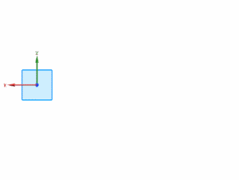

草图尺寸
如果您打开了连续自动标注尺寸  选项，那么在您绘制草图时将会自动标注尺寸。
选项，那么在您绘制草图时将会自动标注尺寸。
自动标注的尺寸将显示值，而不会显示带前缀“p”的名称，它们的显示颜色也与您创建的尺寸不同。

您手动添加几何约束或尺寸后，自动标注的尺寸将会被自动删除。
|
提示 |
自动标注的尺寸将使草图保持完全约束，但它们可能无法捕捉您的设计意图，可以使用它们作为指导，显示草图中哪里需要标注尺寸。 |